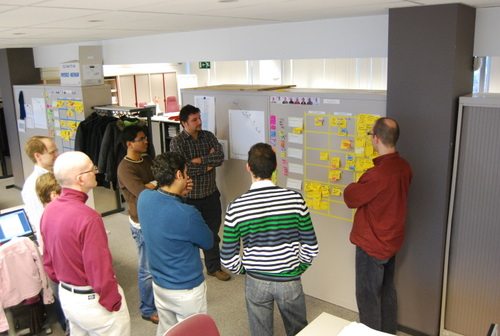

Metodologías Ágiles Para Proyectos
Mario Andrés Yepes C
CTO Dazzet
Quién?
- Ingeniero Electrónico
- Desarrollador

- Marketing Digital
- Estrategia
- Estadísticas
- Desarrollo
- Individuos e interacciones sobre procesos y herramientas
- Software funcionando sobre documentación extensiva
- Colaboración con el cliente sobre negociación contractual
- Respuesta ante el cambio sobre seguir un plan
Scrum
Framework
Iterativo
Incremental
Productos nuevos
Roles
Team
Scum Master
Product Owner
Ceremonias
- Planning
- Daily
- Review
- Retrospective
Artefactos
Product Backlog
Artefactos
Sprint Backlog
Artefactos
Burntdown Chart
Sprint